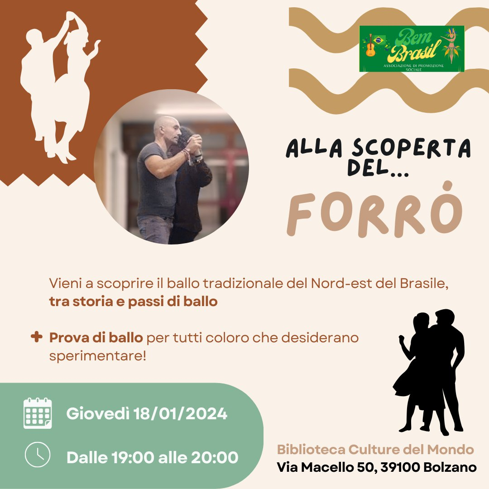

‘Alla scoperta del Forró …’
Il giovedì 18 gennaio 2024, dalle ore 19:00 alle 20:00 organizziamo una serata sulla storia del Forró alla Biblioteca Culture del Mondo via Macello 50, Bolzano

Voglia di conoscere altre culture? Vieni con noi giovedì 18 gennaio e lasciati trasportare in Brasile per un’ora!✈
Scopriremo la storia di un ballo di coppia chiamato “forró” e con essa ripercorreremo la storia dell’ultimo secolo del Brasile. Attraverso i testi delle canzoni e le sonorità entreremo nel mondo dei vaqueiros del Nord Est del Brasile e con loro migreremo verso le grandi città e poi in Europa. E per finire, per chi vorrà, ci sarà la possibilità di provare qualche passo base di forró.
🗓18 Gennaio 2024 ⌚Dalle 19.00 alle 20.00 📍Biblioteca Culture del Mondo (via macello 50, Bolzano)
Ti aspettiamo! 💃
https://www.instagram.com/forro_bolzano?igsh=MXhxZXN0d2F3bWF1ag==